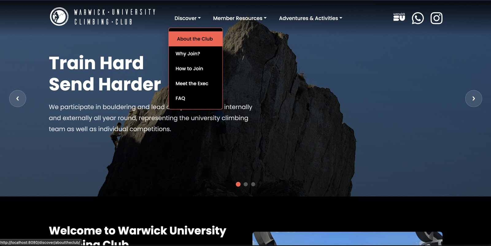
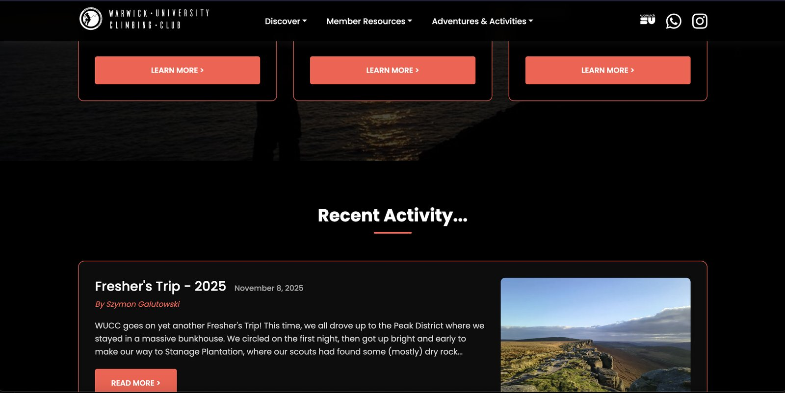
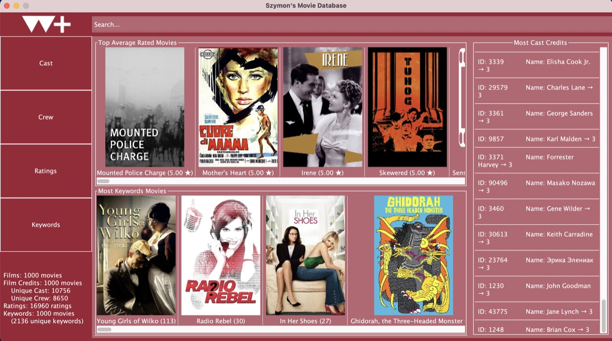
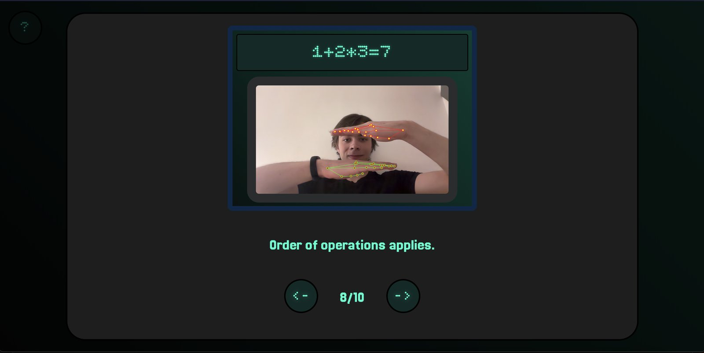

Projects
Completed projects.
Technologies & Competencies
Warwick University Climbing Club Website
Revamp & Architecture
Servers Down
Singlehandedly revived and overhauled the official club website after years of inactivity and hosting outages, transforming it back into an active digital hub.
The servers are currently down due to circumstances beyond my control. Working on getting it back up on a backup.
Warwick University Climbing Club Website
Revamp & Architecture Servers DownSinglehandedly revived and overhauled the official club website after years of inactivity and hosting outages, transforming it back into an active digital hub.


Key Technical Contributions
- • Open-Source & Software Migration: Eliminated legacy proprietary software dependencies to streamline the codebase for future student maintainers and established independent hosting infrastructure in partnership with UWCS (Warwick Computing Society).
- • Performance Optimisation: Refactored asset delivery, minimized bundle payloads, and eliminated render-blocking overhead to ensure rapid load times and smooth mobile experiences.
- • SEO & Discoverability: Implemented structured metadata, semantic HTML, and search-engine best practices to drive discoverability for student sports clubs and prospective climbers.
- • Analytics Integration: Integrated privacy-conscious web analytics to capture real-time visitor metrics, user journeys, and engagement trends to inform content strategy.
- • Brand & UI Modernisation: Overhauled the visual interface and accessibility features to closely adhere to Warwick Sport’s updated brand guidelines.
- • User Testing: Created card sorting exercises to ensure the navigation was intuitive, and appointed lead testers in order to catch issues before deployment.
Szymon's Movie Database
Java Coursework
A high-performance in-memory movie query system and database engine built from scratch in Java, featuring custom data structures and sub-millisecond execution.
Szymon's Movie Database
Java CourseworkA high-performance in-memory movie query system and database engine built from scratch in Java, featuring custom data structures and sub-millisecond execution.

Technical Highlights
- • Custom Data Structures from Scratch: Implemented generic collections without standard library wrappers, including a dynamically resizing hash map with collision chaining (0.75 load factor threshold for average O(1) retrieval), a self-balancing AVL tree, and a singly linked list.
- • Algorithmic Optimisation: Engineered a generic Quicksort using Lomuto partitioning and a median-of-three pivot selection to secure reliable O(n log n) sorting performance and prevent worst-case degeneration.
- • Fast Range & Filter Queries: Leveraged strictly balanced AVL trees (height deviance ±1) to power complex range queries (e.g. filtering films by release period) in O(log n + k) time.
- • Multi-Indexed Database Engine: Structured unified indices across Movies, Cast/Crew Credits, and User Ratings, combining tree and hash lookups to support instant cross-referencing by title, credit IDs, keywords, and average ratings.
- • Benchmark Performance: Consistently recorded sub-millisecond query execution on a 1,000-movie collection (top average-rated query in 0.0475ms; date range filter in 0.0168ms).
Gesture Recognition Calculator
Computer Vision & Web
A touchless calculator that detects hand landmarks through a live webcam feed, interpreting physical gestures to execute mathematical operations in real-time.
Gesture Recognition Calculator
Computer Vision & WebA touchless calculator that detects hand landmarks through a live webcam feed, interpreting physical gestures to execute mathematical operations in real-time.

Technical Highlights
- • Computer Vision Pipeline: Leveraged Google MediaPipe and OpenCV to perform high-frequency hand landmark tracking and continuous coordinate estimation from video streams.
- • Custom Image Dataset & Model Training: Curated and annotated a custom dataset of approximately 1,000 self-captured hand gesture images to train reliable classification models for digits and mathematical symbols.
- • Cross-Platform Porting: Originally engineered the machine learning prototype in Python, then ported the inference logic and UI into client-side JavaScript for browser deployment with zero backend requirements.
- • Interactive UI & State Management: Built an in-browser calculator interface that visualises live bounding boxes, displays confidence values, and evaluates arithmetic expressions in real time.
Autonomous Maze-Solving Robot
Java Coursework
An intelligent autonomous maze-navigation controller featuring junction discovery, stateful backtracking, loop elimination, and optimal route replay.
Autonomous Maze-Solving Robot
Java CourseworkAn intelligent autonomous maze-navigation controller featuring junction discovery, stateful backtracking, loop elimination, and optimal route replay.
Technical Highlights
- • Stateful Exploration & Tremaux-Style Backtracking: Built a finite-state controller that dynamically transitions between forward exploration and dead-end backtracking, maintaining junction visit frequencies to systematically solve unknown topologies.
- • Historical Junction Stack & Loop Pruning: Designed custom data structures tracking coordinate history and heading vectors. When dead-ends or cyclic paths are detected, suboptimal branches are pruned from memory.
- • Optimal Route Execution: After mapping the maze on the initial discovery run, subsequent runs switch into optimal replay mode, guiding the robot to the exit with zero detours or redundant junction evaluations.
- • Robust Collision & Corner Handling: Implemented lookahead checks for walls, passages, corridors, and cul-de-sacs to ensure collision-free steering under simulated sensor inputs.
λGPT: Functional Chatbot
Haskell Coursework
A terminal-based conversational assistant in Haskell featuring monad transformer state management, expression parsing, REST API querying, and persistent disk memory.
λGPT: Functional Chatbot
Haskell CourseworkA terminal-based conversational assistant in Haskell featuring monad transformer state management, expression parsing, REST API querying, and persistent disk memory.
Technical Highlights
-
•
Monad Transformers (
StateT Memory IO ()): Fused state manipulation with I/O operations by structuring the REPL within aStateTmonad transformer stack, lifting side-effecting operations cleanly withliftIO. -
•
Stateful Memory & Disk Persistence: Built persistent key-value memory that saves session state to a hidden file (
.memory.txt) and automatically rehydrates memory on startup, supporting memory retention, associative recall, and targeted forgetting (ForgetandForgetAll). -
•
Expression Parsing & Fold Evaluation: Constructed a recursive expression parser decomposing arithmetic strings into AST
Termrepresentations, folding over operator-operand pairs with context-aware chaining (allowing calculations on prior results). -
•
REST API Integration & JSON Parsing: Integrated the Free Dictionary API via
http-conduit, derivingGenericandFromJSON(Aeson) instances to parse multi-level API responses and safely extract word definitions. -
•
Secure Filesystem Access: Implemented path normalization and tilde-expansion (
~) with boundary validation to safely inspect and print system file contents without path traversal vulnerabilities.
E-Commerce Authenticity Detector
Hackathon Project
A 24-hour hackathon project detecting fraudulent product listings and fake reviews through web scraping, NLP sentiment analysis, and transformer-based AI text detection.
E-Commerce Authenticity Detector
Hackathon ProjectA 24-hour hackathon project detecting fraudulent product listings and fake reviews through web scraping, NLP sentiment analysis, and transformer-based AI text detection.
Technical Highlights
- • Team Leadership & Project Management: Led a multidisciplinary development team across the intensive 24-hour sprint, scoping MVP deliverables, orchestrating architecture design, and delegating frontend and backend tasks.
- • Dual-Layer NLP & AI Review Detection: Co-engineered a sentiment analysis pipeline pairing VADER lexicon models with HuggingFace Transformers to identify synthetic, AI-generated customer reviews and abnormal rating distributions.
- • Automated Web Scraping Engine: Built Selenium automation scrapers targeting multiple e-commerce storefronts to extract real-time pricing data, seller track records, and raw customer review corpora.
- • Full-Stack Architecture: Connected a Python Flask REST API backend with a responsive React frontend dashboard to present consolidated authenticity scores, confidence intervals, and breakdown analytics.
Kepler Satellite Exoplanet Analysis
Astrophysics Data Science
Data science toolkit analysing NASA Kepler satellite stellar observations to detect transit signals, calculate orbital parameters, and evaluate exoplanet habitability.
Note: Team repository; my contributions were developed on the linked szymon branch.
Kepler Satellite Exoplanet Analysis
Astrophysics Data ScienceData science toolkit analysing NASA Kepler satellite stellar observations to detect transit signals, calculate orbital parameters, and evaluate exoplanet habitability.
Note: Team repository; my contributions were developed on the linked szymon branch.
Technical Highlights
- • Stellar Big-Data Analysis: Worked in a research team to process and clean astronomical photometric time-series data captured by NASA's Kepler space observatory.
- • Transit Detection & Statistical Modeling: Co-developed a Python analysis tool using NumPy to process flux dips across stellar light curves, estimating orbital periods, radii, and habitability metrics for Earth-like candidates.
- • Scientific Visualisation: Utilised Matplotlib to generate transit light curves, stellar classification charts, and habitable-zone boundary diagrams.
- • Conference Presentation (CosmicCon): Selected to present findings and methodologies to an audience of over 100 researchers, academics, and students at Queen Mary University of London.
GPQueue: Hospital Management System
Full-Stack App
A comprehensive scheduling and hospital management system developed for my A-Level Computer Science coursework, marking my first use of industry-standard web development technologies.
GPQueue: Hospital Management System
Full-Stack AppA comprehensive scheduling and hospital management system developed for my A-Level Computer Science coursework, marking my first use of industry-standard web development technologies.
System Walkthrough Videos
System Walkthrough (Part 1)
System Walkthrough (Part 2)
Technical Highlights
- • Modern Web Architecture: Architected a fully decoupled full-stack application, pairing a dynamic React frontend utilizing the Fetch API with a robust Flask backend REST API.
- • Relational Data Design: Engineered a complex PostgreSQL database schema to securely manage and relationalize patient records, doctor schedules, and appointment histories.
- • Algorithmic Triage: Implemented a custom Priority Queue algorithm to automatically categorize and manage patient flows based on urgency rules.
- • Scheduled Automation: Leveraged server-side Cronjobs to handle routine tasks like stale record cleanups and appointment status updates reliably without manual intervention.
More projects will be added here as they're completed.